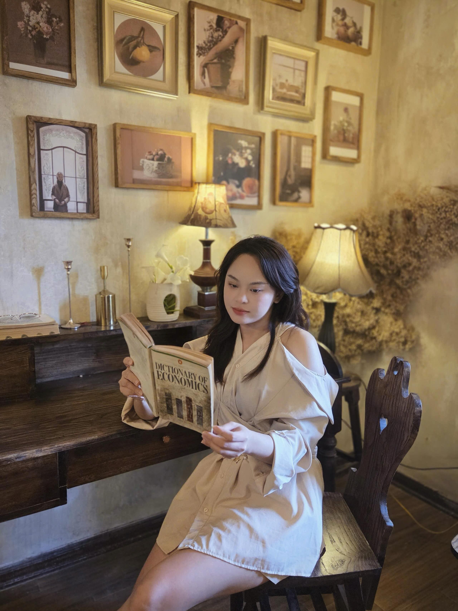
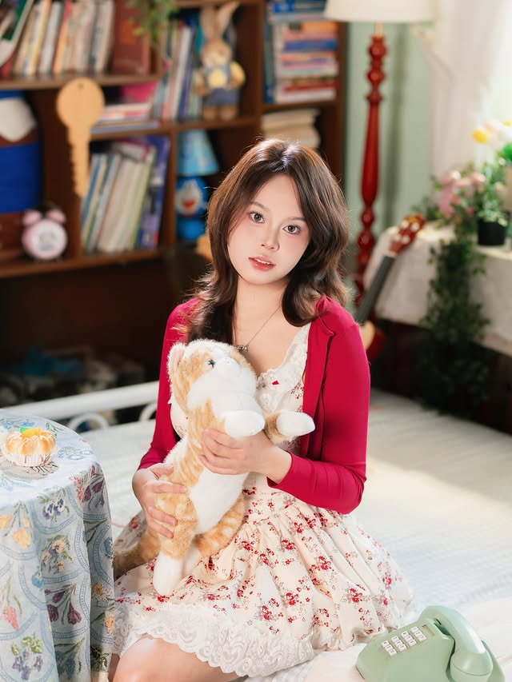

Gửi em ninhnpt, em Ninh LD, em ninni888, em neen_dyi ... và các em khác 🌷😺😻


Gửi ai đó
Có những thứ không nên và không thể lưu bằng tin nhắn, nên mặc dù không giỏi lập trình, anh vẫn phải cố đào lại đống kiến thức HTML, CSS, JavaScript để làm điều này.
Anh thầm cảm ơn bản thân suốt mấy tháng hè năm đó đã kiên trì đi học môn Lập trình Web. Cứ tưởng chẳng bao giờ dùng đống kiến thức ấy, nhưng bằng cách nào đó hôm nay lại có cơ hội 😂
Trên đời này, có những điều chẳng thể nói to cho ai biết.
Không phải vì chúng ta muốn giấu đi, mà như vậy sẽ là tốt hơn cho chính chúng ta.
Anh tin rằng, mọi sự gặp gỡ đều có lý do, nhưng mọi cảm xúc đều là ngẫu nhiên.
Nếu có ai hỏi vì sao anh không dừng lại được mối quan hệ này, anh sẽ nói rằng anh không có lý do để bắt đầu, nên chẳng có lý do để kết thúc 🙆♂️
Anh từng nói với em rằng, chỉ từ khi quen em thì anh mới thấy mình có giá trị với phụ nữ.
Trong công việc, anh làm được nhiều thứ hơn anh nghĩ.
Anh cũng chưa từng là người giỏi lắng nghe và chia sẻ. Anh từng gạt đi tất cả nếu phải nghe ai than vãn.
Nhưng anh không hiểu mình đã trúng cái bùa ngải gì để tự nguyện làm điều đó với em.
Chứ tôi là tôi nghi lắm đấy 😌
Anh thấy mình trưởng thành hơn nhiều, thích lắng nghe những câu chuyện từ em, mặc dù em cứ bảo nó vô tri hay sợ bản thân mình nói nhiều 😒
Anh không muốn em có cảm giác đó, nên dù có khó hiểu, thì trí tuệ siêu phàm của tôi vẫn xử lý được nha 😇
Anh biết những gì em đã và đang làm, 9.5 phần là vì em, nên dù 0.5 phần còn lại là vì anh hay vì chúng ta, hay vì bất kỳ điều gì, thì cũng khiến anh cảm thấy trân trọng em hơn rất nhiều.
Anh lo em vất vả, anh sợ em stress.
Anh sợ lắm, nhưng anh mong rằng "công chúa" sẽ luôn vững vàng, nhanh nhạy và bản lĩnh, như là lúc đu dây í 🥰
Ngày đó, anh đưa cho em một công việc, em trả lại anh một người đồng hành.
Em mang cho anh một nhân viên chăm chỉ, anh trả lại em một người leader toàn năng.
Và anh mang cho em một người thấu hiểu, em đã trả lại anh một chỗ dựa tinh thần.
Trước bước ngoặt của em, em có anh hướng dẫn.
Trước bước ngoặt của anh, anh có em đồng hành và chia sẻ.
May quá, chẳng ai nợ ai cái gì, chứ không lại phải mang sổ bút ra mà tính toán nợ lãi 😂
À, dù rất ít khi nghe rap, nhưng anh thấy bài In love - Low G ft. JustaTee có đoạn:
". . . Anh chưa bao giờ cảm thấy an toàn và yên tâm như thế
Và mình có thể nói chuyện hàng giờ về chỉ một chủ đề
You're the only girl showing me the way to love
Only one I trust, ain't afraid to tell the world
Many things to learn, anh không cần gì hơn . . ."
Anh cũng vậy, và em cũng vậy. Có lẽ chính cảm giác an toàn, tin tưởng, là thứ đã khiến chúng ta quay đi rồi lại quay lại.
Anh thấy may mắn vì điều đó và dĩ nhiên tôi không nhả 😂
Cảm ơn em vì đã ở đây, lắng nghe những lúc anh càm ràm và luôn kéo cơn bực tức của anh xuống.
Anh cũng chẳng phải người mạnh mẽ, cũng hay yếu lòng lắm. Nhưng em còn cần anh, anh vẫn sẽ luôn bên cạnh.
Đối với anh, Better late than never - Muộn vẫn hơn là không bao giờ 🥰
Anh luôn mong được lắng nghe em nhiều hơn
Anh trân trọng và biết ơn em rất nhiều
Cuối mỗi đoạn, anh không chấm câu để không phải chấm hết